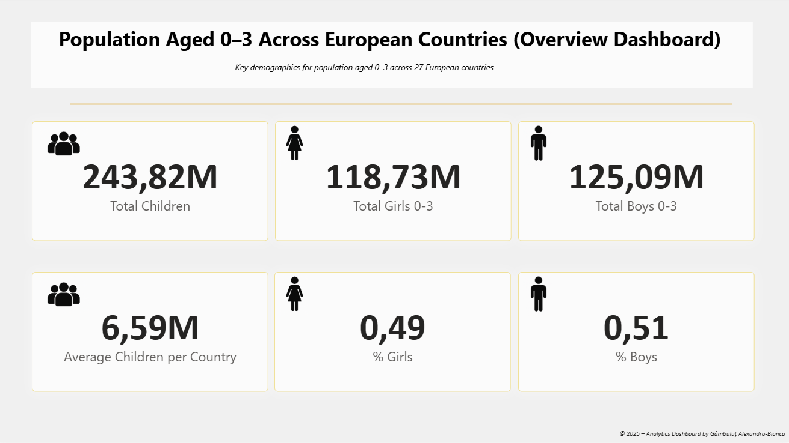
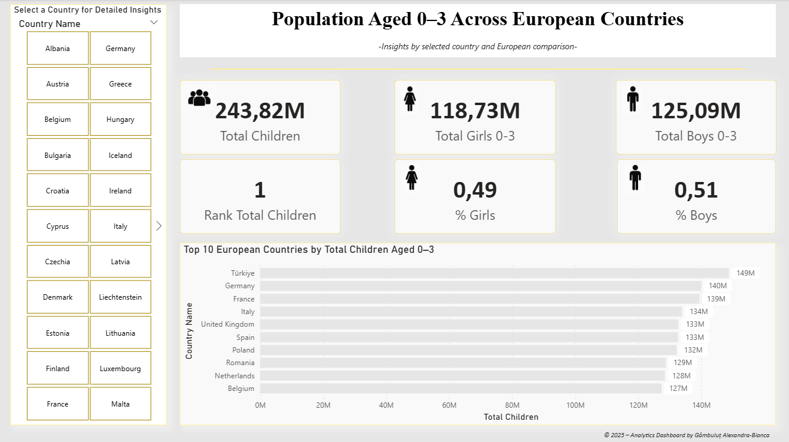
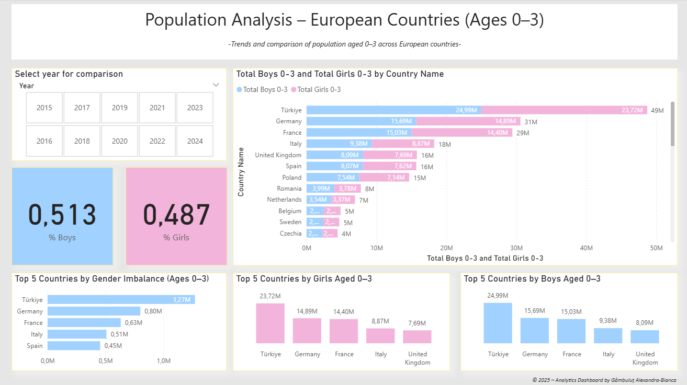
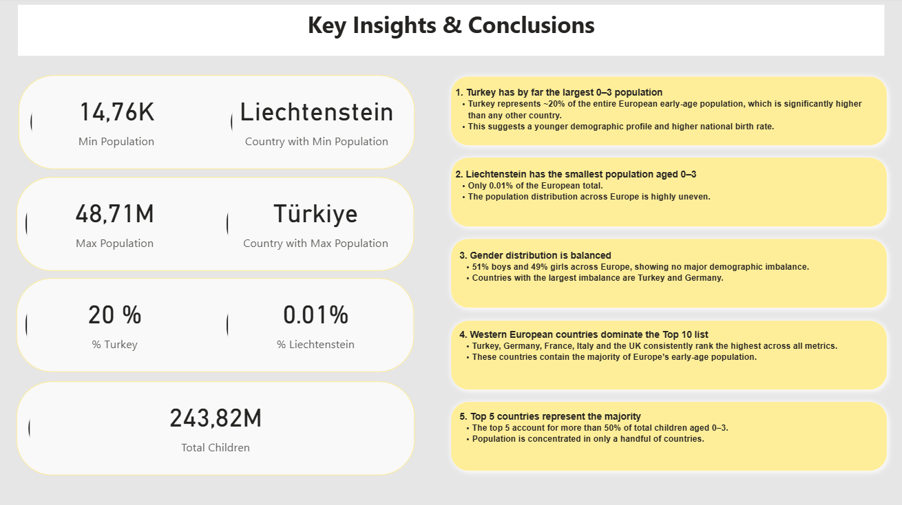

This Power BI project explores demographic dynamics across European countries, focusing on the population aged 0–3. Early childhood data is a critical indicator for regional development, social policy planning and future education demand.

High-level distribution of early childhood population across Europe.

Compare each country with the European average.

Breakdown by gender and demographic balance.

Summary of the most important patterns discovered.